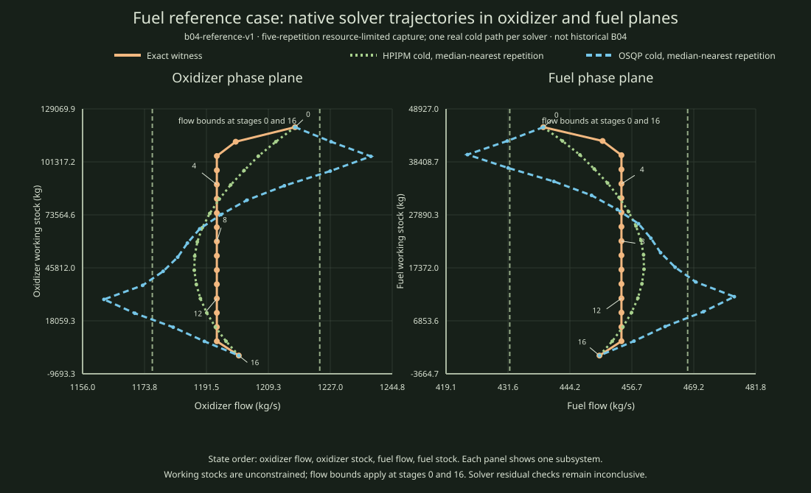

Native solver output, shown as a diagnostic illustration
Representative solver paths from a five-repetition resource-limited capture
The left panel plots oxidizer flow against oxidizer working stock, and the right plots fuel flow against fuel working stock. These are the state projections (x1,x2) and (x3,x4) for the declared four-state order.

Download the two saved native attempt rows · Open the exact reference witness
Evidence scope. The plotted solver paths are real cold attempts selected from five repetitions per solver, choosing the attempt whose native solve time is nearest that solver's median. This is an illustration, not an averaged path or a historical B04 reconstruction. The exact saved witness is separately proven globally optimal for this frozen input. Solver residual checks remain inconclusive.
Recorded solver values
| Attempt | Original norm | Max residual | Evidence status |
|---|---|---|---|
| Exact saved witness | 160.880653945527 | 0 (rational check) | exact global optimum for this frozen reference |
| HPIPM, median-nearest cold repetition | 160.880653945490 | 2.91e-11 | inconclusive |
| OSQP, median-nearest cold repetition | 160.882458930638 | 1.91e-06 | inconclusive |
Reproduce
python3 scripts/reports/mpc01/b04_native_smoke_projection.pyRunner source commit: 452db1ceb0312607fe7791b5ff4d84a2730df6ff. Frozen input SHA-256: bc9e1b804b7878cb0da5c28c030893e1b41e7a2a34cb86b1c0fb8380ec780f6d. Attempt rows SHA-256: 3033ec0ac6966a0e7e88d35e4c48c70cde30f40315252aa08a113cabb7a54246.